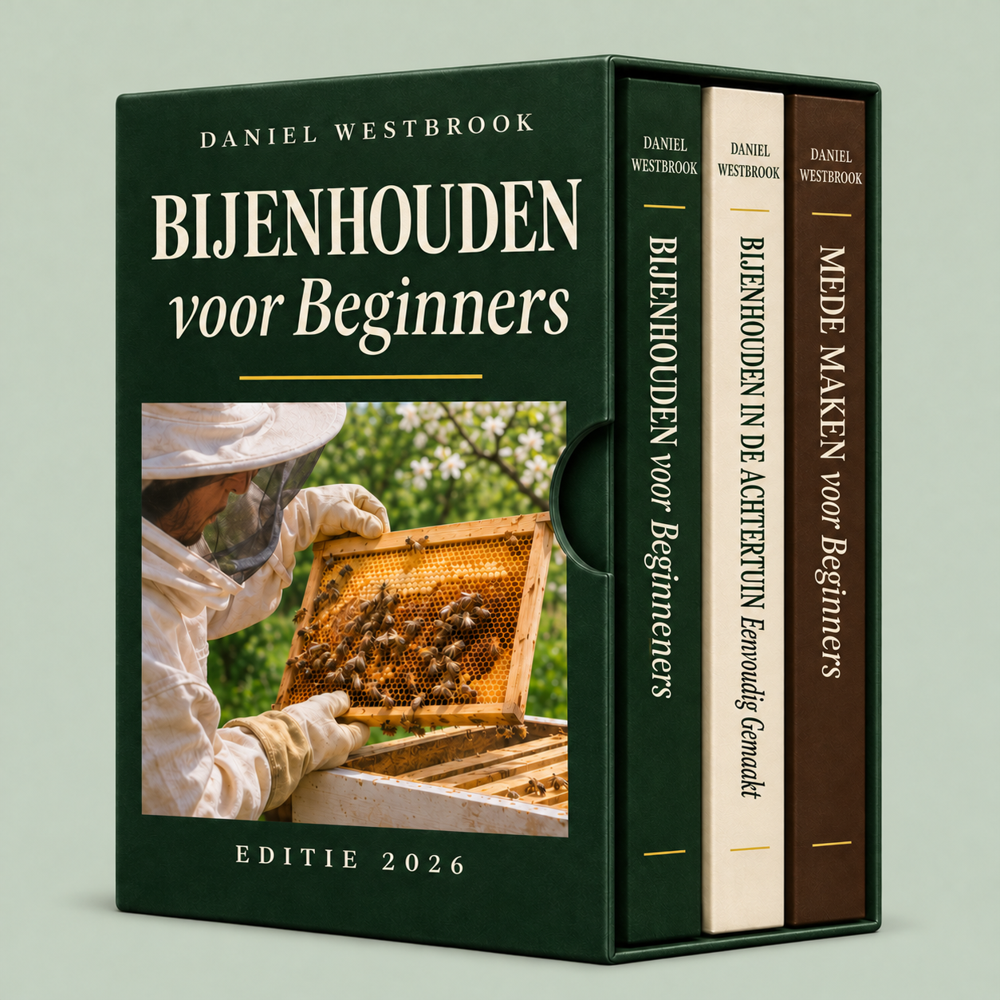

DE COLLECTIE VAN DANIEL WESTBROOK
Van je eerste bijenvolk tot je eigen honing.

Begrijpen. Observeren. Groeien.
JOUW LEDENOMGEVING
Jouw avontuur
Jouw avontuur
met de bijen
begint hier.
Fijn dat je er bent. Ontdek de wereld van de bijen met kennis die je vanaf de eerste stap begeleidt.
JOUW PERSOONLIJKE BIBLIOTHEEK
Naar mijn ledenomgeving
De basis begrijpen. Imkeren in je eigen tuin. Ontdekken hoe je mede maakt.
Lees alle drie de boeken direct of download de PDF-bestanden.
- 3
- Boeken
- 180
- pagina’s kennis
- Jouw tempo
- Voor beginners